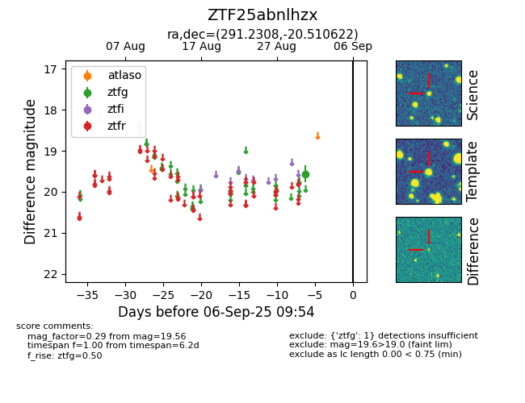

FINK: ZTF25abnlhzx
Lasair: ZTF25abnlhzx
ALeRCE: ZTF25abnlhzx
ZTF25abnlhzx (ztf,fink)
equatorial (ra, dec) = (291.2308,-20.51062)
galactic (l, b) = (17.8530,-16.32740)

last ztfg=19.56
1 ztfg detections